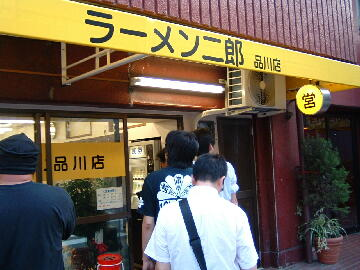
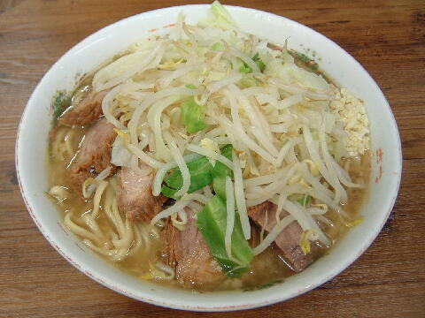

品川区 北品川 1-18-5
日・祝
11：00〜14：30 17：00〜21：00
土 11：00〜14：00

小 700円、小ブタ 800円、小ダブル 900円
大 800円、大ブタ 900円、大ダブル 1000円
煮玉子 100円、ネギ入り 100円
店員は、いつもの凸凹コンビ。
黒コショウ（ギャバン）、トウガラシ（SB）。
レンゲ有。ティッシュ有。名刺無。
BGMは、USENからの歌謡曲。
トッピングは、本店と同じ。アイコンタクトで聞かれるときもある。
アブラは背脂がゴロッと入る。ヤサイはダブル、トリプル、タワーとある。
メルマガは「a0001676490@mobile.mag2.com」で用意されている。
「ラーメン二郎 品川」でヤフー検索
「ラーメン二郎 品川」でヤフーリアルタイム検索
「ラーメン二郎 品川」でグーグル検索

普通盛焼豚小ブタ ニンニク
麺は、小麦がギュッと詰まった二郎の太麺。シナシナ食感が美味い。
ぶたは、小ぶりだがプニュプニュとしていて柔らかく、肉の食感も良い。
スープは、非乳化傾向にある甘口スープ。品川クオリティー。
ヤサイは、モヤシ7：キャベツ3の割合。ホクホクで美味い。
ニンニクは、刻みニンニク。中粒でカライ。
ＰＣ店